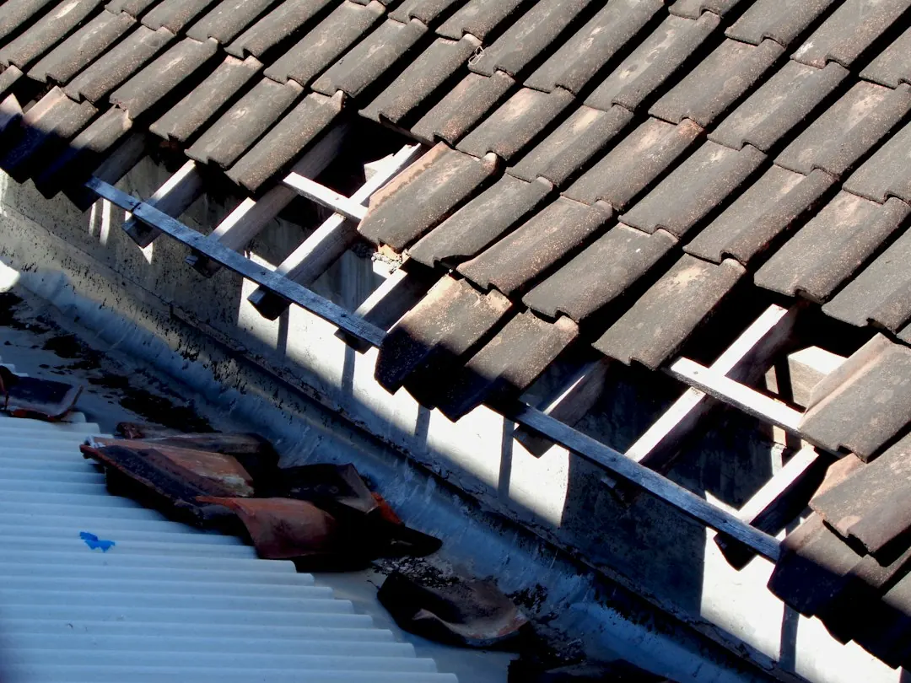

Most Perth homes suit a gutter clean once a year, scheduled before the wet season. The job should remove leaves, sand, silt, weeds and bird nests from gutters, flush the downpipes, and leave garden beds and paths tidy. Roof height, pitch and the amount of build-up affect the quote. Upper-storey work requires suitable fall protection, while stormwater repairs belong with a licensed plumber.
For Perth homeowners comparing gutter cleaning perth options, the practical decision is whether the service addresses the full route from roof edge through downpipes, with access and seasonal debris considered.
Gutter Cleaning Perth Explained
For property owners comparing local options, Gutter Cleaning Perth describes a clean as more than removing visible leaves from the roof edge. The work follows the path rain takes, beginning with the gutters and continuing through the downpipes to the ground.
Typical debris includes leaves, sand, weeds, silt and bird nests. Wet sludge may need to be scooped or removed with a vacuum, because blowing dry leaves around does not clear the material settled on the gutter floor. Downpipes should be checked and flushed so water has a clear route away from the roof.
Debris removal is part of the practical result. Leaves and sludge are bagged and carried away, with the surrounding lawn, paths and garden beds left tidy. If a stormwater connection needs repair, that is separate plumbing work rather than part of ordinary cleaning.
Why Perth conditions change the timing
The useful local distinction is between the winter wet and the dry run into summer. A clean before winter rain deals with the leaves and sand that can restrict flow when heavy showers arrive. A further check before fire season addresses dry leaves sitting along the roof line.
Homes near sandy yards can collect fine sand that settles into silt. Properties under overhanging trees may fill faster than open roofs because leaves keep entering the gutter line. Those conditions are more useful scheduling clues than a generic calendar reminder.
Overflow can begin with a small blockage. Debris packs down, a downpipe loses capacity, and water spills over the edge toward eaves and walls. The published guidance also notes that water with nowhere to go can back up under roof sheets or tiles, while overflow beside footings can soften sandy soil during a wet winter.
How roof conditions affect the quote
A quote should account for the house rather than rely on a standard assumption. Roof height, pitch, access, gutter fullness and the number of storeys all change the work involved. Describing those details before the visit gives the cleaner a better basis for pricing.
Single-storey homes with light leaf build-up may need a straightforward clear and downpipe flush. A double-storey house, steep roof or heavily packed gutter line requires different access equipment and more time to reach and remove debris. A vacuum can help with wet sludge and dry leaves, but it does not remove the need to inspect the whole gutter path.
Use this comparison when deciding what to ask for:
- Standard residential clean: gutters and downpipes cleared, with debris removed from the property.
- Higher-access or heavy-build-up clean: upper-storey runs addressed with height-rated gear, fall protection and a quote that reflects the access conditions.
- Roof and gutter clean: roof moss and dirt washed away at the same visit as gutter and downpipe clearing.
Access, fall protection and repairs
Upper-storey gutters should not be treated as a normal ladder job. The published service description refers to harnesses, height-rated gear and fall protection for double-storey or steep roofs. It also describes working from downpipe outlets toward the closed end, lifting debris out instead of pushing it into the pipe or stormwater connection.
Before booking, describe steep sections, upper-storey access, nearby structures and anything that could affect the job. That information helps determine whether the cleaner can reach the runs with appropriate equipment and whether the work needs a different method.
Cleaning and plumbing repairs should remain separate decisions. A blocked or damaged stormwater connection may require a licensed plumber, who can issue a Certificate of Compliance for that repair. Ask where cleaning ends and repair work begins before approving additional work.
Who this guide applies to
This guide is for Perth homeowners, landlords, strata representatives and commercial property managers deciding whether a gutter service matches the building. Residential jobs focus on leaves, sand and silt. Offices, warehouses, industrial sites and strata complexes may need a broader plan for roofs, access and debris removal.
It is also useful for homes where the main concern is not just a full gutter, but the condition of the entire drainage route. Ask whether downpipes will be flushed, whether wet sludge will be removed rather than displaced, and how the property will be left after the debris is taken away.
For a more narrowly residential checklist, see the residential gutter cleaning guide for Perth homes. When requesting a price, provide the suburb or postcode, number of storeys, roof access details, visible overflow, nearby trees and the approximate amount of debris.
- Describe the property. State the suburb or postcode, number of storeys, roof pitch, access conditions and nearby trees or structures.
- Describe the symptoms. Mention water spilling over, blocked downpipes, visible silt, heavy leaf build-up or dry leaves before fire season.
- Confirm the scope. Check that gutters, downpipes, debris removal and site tidying are included, and clarify any separate plumbing repair.
- Review the access plan. Ask how upper-storey or steep sections will be reached and what fall protection or height-rated gear is required.
| Situation | Useful scope | Question to ask |
|---|---|---|
| Leaves, sand or silt in residential gutters | Gutter and downpipe clean with debris removal | Will wet sludge be scooped or vacuumed, and will downpipes be flushed? |
| Double-storey or steep roof | Height-access cleaning with suitable fall protection | What equipment and access method will be used? |
| Moss or dirt on the roof as well as blocked gutters | Combined roof and gutter cleaning | Will roof debris and gutter debris be removed in the same visit? |
| Suspected stormwater connection problem | Cleaning assessment followed by licensed plumbing work if required | Which parts are cleaning, and which require a plumbing repair? |
Common questions
How often should most Perth homes have their gutters cleaned? The published guidance says once a year suits most homes, with the clean booked before the wet season. Homes beneath overhanging trees or beside sandy yards may need closer attention because leaves and silt can accumulate faster.
Does gutter cleaning include downpipes? It should when the requested scope follows the full route from roof to ground. The described service clears and flushes downpipes, while stormwater connection repairs remain separate plumbing work.
What information affects the price? Roof height, pitch, access, number of storeys and how full the gutters are all affect the quote. Describe those conditions before anyone attends so the work can be priced against the actual property.
Can a cleaner work on a double-storey roof? The service description includes double-storey work using harnesses and height-rated gear. Ask what fall-protection method will be used for the particular roof and whether any areas require separate assessment.
What should happen to the debris after cleaning? Leaves and sludge should be bagged and carried away, with paths, lawns and garden beds left tidy. Confirm this as part of the scope before work starts.
This guide covers gutter debris, downpipe flow, Perth seasonal timing, access requirements, quote inputs and the boundary between cleaning and plumbing repairs.